开发-插件机制¶
1. 准备工作¶
1. 插件开发总流程（新版推荐）¶
Discuz! 插件是一套 高集成度、低侵入性 的扩展机制，适用于功能模块的新增、模板的扩展、数据库的操作和前后台页面的增强。插件开发的标准步骤如下：
| 步骤 | 内容 |
|---|---|
| 1️⃣ | 需求分析与功能设计（页面/接口/数据表/语言包） |
| 2️⃣ | 创建插件基础目录结构（source/plugin/identifier/） |
| 3️⃣ | 编写插件配置文件（plugin.xml）与语言包 |
| 4️⃣ | 编写功能代码（PHP逻辑、钩子类、控制器） |
| 5️⃣ | 编写模板文件（HTM）并按需实现 hook 嵌入 |
| 6️⃣ | （可选）设计自定义数据表 + Table 类封装 |
| 7️⃣ | 后台安装测试插件，调试功能 |
| 8️⃣ | 导出插件 XML + 打包说明文档发布 |
2. 插件目录结构（标准）¶
source/plugin/yourpluginid/
├── plugin.xml 插件安装配置文件
├── yourpluginid.inc.php 插件主入口（控制器式）
├── hook/ 插件钩子类目录
│ └── yourpluginid.class.php
├── template/ 插件模板文件
│ ├── list.htm
│ └── mobile/
├── table/ 自定义数据表封装类（Table类）
│ └── table_mytable.php
├── function/ 插件专用函数库（可选）
│ └── yourpluginid.func.php
3. 文件命名规范（Discuz 最新支持）¶
| 文件用途 | 命名方式 | 举例 |
|---|---|---|
| 可浏览入口页面 | xxx.php | index.php |
| 引用逻辑文件 | xxx.inc.php | hook.inc.php |
| 自定义函数库 | xxx.func.php | yourplugin.func.php |
| 自定义类库 | xxx.class.php | yourplugin.class.php |
| 模板文件 | .htm | template/list.htm |
| 模板语言包 | identifier.lang.php （开发期用） | yourplugin.lang.php |
| 表封装类 | table_表名.php | table_mytable.php |
| 插件配置文件 | plugin.xml |
X3.4+ 强调模块化封装，鼓励使用 table + class 架构
4. 插件的插件安装文件 plugin.xml 简述¶
<plugin>
<identifier>yourpluginid</identifier>
<name>我的插件</name>
<version>1.0</version>
<description>这是一个示例插件</description>
<directory>source/plugin/yourpluginid/</directory>
<copyright>MyTeam</copyright>
<modules>
<extra />
</modules>
</plugin>
5. 插件执行控制核心入口 .inc.php¶
这是插件被调用时的主控文件，通常用于接收参数、调用方法、加载模板：
6. 插件 Hook 类的结构（新版标准）¶
class plugin_yourpluginid {
function global_footer() {
return '<div class="plugin-msg">Powered by myplugin</div>';
}
}
class plugin_yourpluginid_forum extends plugin_yourpluginid {
function index_top() {
return '<div class="plugin-msg">论坛首页顶部插入内容</div>';
}
}
类名结构：
- 全局钩子：plugin_插件ID
- 模块钩子：plugin_插件ID_模块名
- 例如：plugin_demo_forum → 只作用于 forum.php
7. 自定义数据表 + Table类¶
位置： source/plugin/yourpluginid/table/table_yourtable.php
if (!defined('IN_DISCUZ')) {
exit('Access Denied');
}
class table_yourtable extends discuz_table {
public function __construct() {
$this->_table = 'yourtable';
$this->_pk = 'id';
parent::__construct();
}
public function fetch_all_by_uid($uid) {
return DB::fetch_all("SELECT * FROM %t WHERE uid=%d", array($this->_table, $uid));
}
}
8. class_core.php 与插件环境初始化¶
Discuz 的 class_core.php 是所有插件及系统组件的通用启动文件，插件的运行流程依赖其环境变量和配置。关键功能：
| 功能项 | 描述 |
|---|---|
| 初始化 IN_DISCUZ | 所有文件访问保护标识 |
| 定义 DISCUZ_ROOT | 当前站点根目录 |
| 加载核心函数库 | function_core.php |
| 初始化 $_G 超全局 | 包含用户信息、环境配置、权限、全局设置 |
| 建立数据库连接 | 使用 DB::table() 统一表前缀方式 |
| 加载语言包缓存 | 支持 lang() 全局函数访问模板语言文字 |
| 判断用户权限 | $_G['adminid'] 判断权限级别 |
9. 调试建议¶
| 场景 | 解决方式 |
|---|---|
| 插件无效 | 检查是否正确安装；类名是否匹配钩子 |
| Hook 无效 | 模板中未添加 |
| 模板未生效 | 清除缓存，或是否在 template/插件ID/template/ |
| 表结构无效 | 检查 table 类命名 + 表前缀配置 |
| 插件变量不输出 | 检查是否正确注册语言包/函数调用 |
10. 插件打包发布建议（新版规范）¶
| 项目 | 内容 |
|---|---|
| 插件目录结构 | 完整遵守 source/plugin/插件ID/ |
| 插件 XML 配置 | plugin.xml 必填，插件名称/说明/版本号 |
| 多语言支持 | 使用 .lang.php + {lang key} 模板调用 |
| 不侵入核心文件 | 所有逻辑必须走 hook、模板、API，不修改官方文件 |
| 文档说明 | 包含安装说明、功能说明、兼容性说明、卸载说明等 |
11. 总结：Discuz! 插件架构设计优势¶
| 特性 | 优势 |
|---|---|
| 高解耦 | 所有逻辑与核心系统完全隔离 |
| 高扩展性 | 支持页面钩子、模板钩子、类封装 |
| 高兼容性 | 多版本支持，API 稳定，升级安全 |
| 高分层 | 支持控制器/模板/表/函数分离 |
| 高定制性 | 插件即模块，可打包发布和移植 |
2. 插件参数读取机制¶
参数读取是插件开发中非常关键的一环，决定了插件是否能够被灵活配置、缓存高效、用户可操作性强。
1. 插件参数配置的用途¶
在插件开发中，开发者通常需要让站长自定义一些行为，比如：
- 是否启用某个功能开关
- 设置接口地址、Token
- 每页显示条数等
这些信息应通过后台插件管理界面配置，避免写死在代码中。
2. 参数的定义来源：plugin.xml¶
插件参数配置统一在 plugin.xml 文件中声明，示例如下：
<vars>
<var>
<title>接口地址</title>
<description>API 基础地址</description>
<variable>api_url</variable>
<type>text</type>
<value>https://api.example.com/</value>
</var>
<var>
<title>是否启用调试</title>
<description>开启后记录调试日志</description>
<variable>debug</variable>
<type>radio</type>
<value>1</value>
<extra>1=开启|0=关闭</extra>
</var>
</vars>
添加后，后台 → 插件 → 配置 → 会自动显示这些字段。
3. 参数的存储位置¶
系统会将插件的参数保存到数据库，并生成缓存：
| 存储类型 | 数据位置 |
|---|---|
| 数据库 | common_plugin 插件基础信息（id/标识/版本） |
| common_pluginvar 插件参数表 | |
| 内存缓存（推荐） | $_G['cache']['plugin'] |
4. 推荐读取方式：缓存读取¶
这是 Discuz 推荐方式，性能更优，通用于所有插件：
调用方式：插件主脚本中（plugin.php、钩子类、inc.php）可直接读取，不需额外加载缓存。
if (!defined('IN_DISCUZ')) exit('Access Denied');
$pluginvars = $_G['cache']['plugin']['mypluginid'];
if ($pluginvars['debug']) {
echo '<p>调试模式已开启</p>';
}
5. 特殊配置类型的读取方式（支持分区/用户组配置）¶
Discuz 支持基于不同作用域的插件参数配置，如：
| 类型 | 参数作用域 | 读取方式 |
|---|---|---|
| 全局 | 整站生效 | $_G['cache']['plugin']['插件ID']['参数名'] |
| 版块（按 fid） | 对某个版块设置不同配置 | $_G['cache']['forums'][$fid]['plugin']['插件ID'] |
| 用户组 | 用户组维度设置参数 | $_G['cache']['usergroup'][$groupid]['plugin']['插件ID'] |
$_G['group']['plugin']['插件ID'] |
说明：
- 版块、用户组配置需在 plugin.xml 中将
设置为 forum 或 group； - 插件必须正确设置参数作用域，系统才会生成对应缓存。
6. 数据库直接读取（不推荐，仅用于调试或特殊场景）¶
$query = DB::query("SELECT * FROM ".DB::table('common_pluginvar')." WHERE pluginid='$pluginid'");
while($var = DB::fetch($query)) {
$pluginvars[$var['variable']] = $var['value'];
}
缺点：
- 不走缓存；
- 消耗性能；
- 不能处理用户组/版块作用域参数。
3. 插件接口¶
插件接口设计与模块注册机制，这部分主要涵盖的是插件在管理后台的注册行为、页面嵌入方式与模块配置入口。
1. 插件模块¶
插件通过模块化注册机制与系统挂接，模块主要包括：
| 模块类型 | 注册位置 | 对应文件位置 |
|---|---|---|
| 程序链接（主/顶部/底部/快捷导航） | 导航菜单 | .inc.php 控制器 |
| 扩展项目（如个人设置、积分页等） | 个人中心 / 管理中心 | .inc.php + 模板 |
| 程序脚本（页面嵌入） | 页面嵌入点 | .class.php 钩子类 |
| 插件菜单项 | 后台插件子菜单 | .inc.php 脚本 |
| 插件配置 | 插件设置页 | 自动生成 |
模块类型详解（Discuz! X3.4 最新建议）
-
程序链接（前台导航类模块）
- 作用：将插件链接添加到前台导航（顶部、主导航、底部）
- 可跳转外部 URL 或插件内部页面
- 文件形式：
source/plugin/myplugin/myentry.inc.php - 在导航中配置为：
链接：plugin.php?id=myplugin:myentry plugin.php自动路由到该.inc.php文件，无需显式注册。
-
扩展项目（个人中心、后台管理）
- 作用：向系统特定模块插入功能，如“我的积分”“门户管理”
- 注册位置：插件后台 → 扩展项目
- 配置项：模块名（用于插件脚本）、菜单名（界面显示）
- 示例文件：
- 前台渲染自动调用该 HTM 模板，无需重复渲染代码。
-
程序脚本（页面嵌入类模块）
- 用于在页面中通过钩子（hook）插入 HTML、JS、CSS 内容：
- 示例：
source/plugin/myplugin/myplugin.class.php - 示例类结构：
- 被钩子标签调用：
<!--{hook/global_footer}--> - 系统自动调用
plugin_myplugin::global_footer()返回 HTML 内容。
-
插件配置模块（后台子菜单）
-
如果需要后台设置页，可注册“管理中心”模块，插件列表中将出现“设置”按钮：
- 文件：
admin.inc.php - 路由：后台 → 插件 → 设置
- 文件：
-
示例脚本：
-
插件快速访问方式
- 路由形式：
plugin.php?id=插件标识:模块名 - 自动定位文件：
source/plugin/插件标识/模块名.inc.php- 若 模块名 缺失，系统会尝试加载 插件标识.inc.php
- 插件访问无需二次注册，即可直接访问
页面嵌入点（hook）机制
- Discuz! 前台/模板中大量存在 hook 标签：
<!--{hook/index_top}--> - 只需在插件中实现对应钩子函数，系统会自动注入插件内容。
- 类命名规则：
| Hook 所属页面 | 类名 | 方法名 |
|---|---|---|
| 全局 hook | plugin_myplugin | hook名称() |
| 模块专属 hook | plugin_myplugin_forum | hook名称() |
- 示例：
class plugin_myplugin_forum {
function index_top() {
return '<div class="plugin-banner">论坛首页顶部内容</div>';
}
}
2. 插件变量配置¶
Discuz 提供“通用插件配置页”，自动生成配置表单并缓存参数：
- 配置项定义于 `plugin.xml` 的 `<vars>` 标签中
- 配置界面 → 插件设置 → 自动生成字段
读取方式：
3. 西瓜分类信息插件案例分析¶
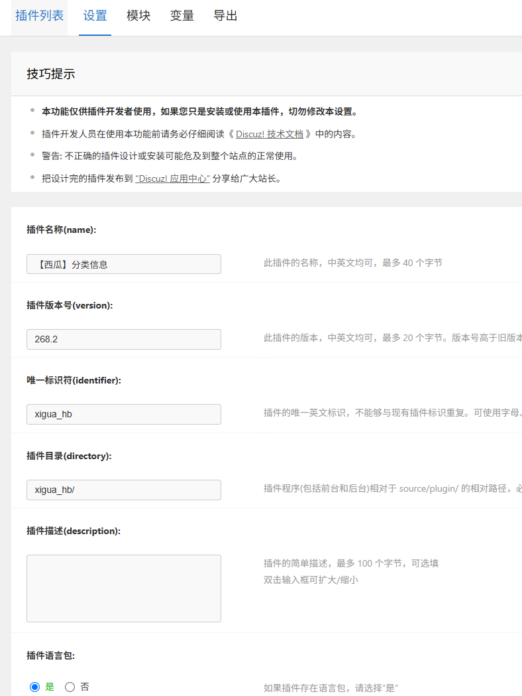
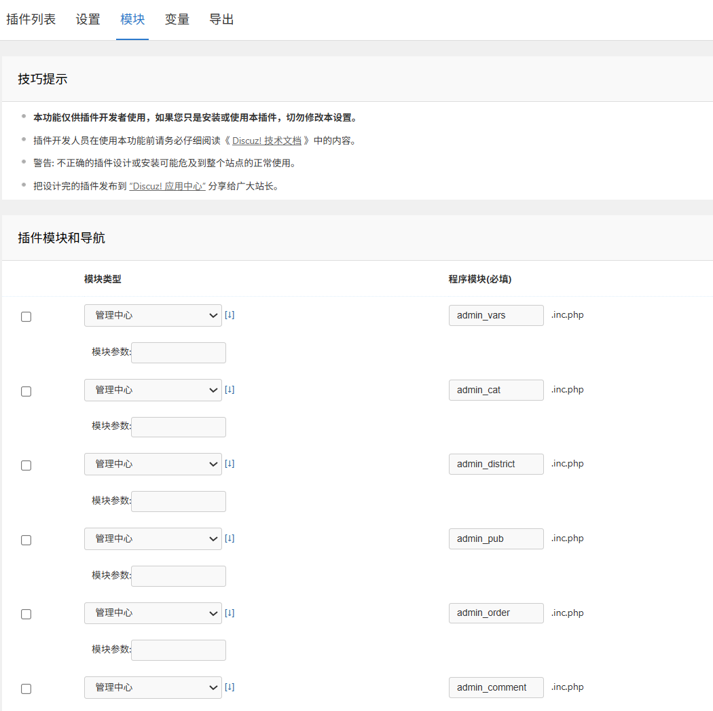
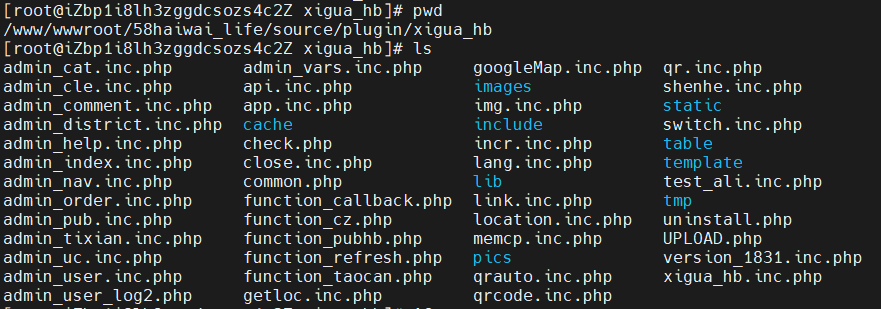
1. 插件模块
14 个后台管理模块
在 XML 文件中，<__modules> 字段列出了 14 个后台管理模块，全部属于 type=3（扩展项目 - 管理中心模块），即这些模块会在后台插件菜单中显示，供管理员管理使用。每一个
| 菜单名称 | 文件名 |
|---|---|
| 扩展设置 | admin_vars.inc.php |
| 分类 | admin_cat.inc.php |
| 地区 | admin_district.inc.php |
| 信息 | admin_pub.inc.php |
| 订单 | admin_order.inc.php |
| 评论 | admin_comment.inc.php |
| 提现 | admin_tixian.inc.php |
| 帮助 | admin_help.inc.php |
| 用户 | admin_user.inc.php |
| 导航 | admin_nav.inc.php |
| 广告 | admin_index.inc.php |
| 语言包 | lang.inc.php |
| 插件入口 | link.inc.php |
| 清理缓存 | admin_cle.inc.php |
| 更多应用 | app.inc.php |
页面访问入口文件（前台可能访问），未在后台注册但可能通过 hook 或 controller 调用
- api.inc.php：可能用于 REST API 接口响应
- app.inc.php：可能用于页面展示（如发布/列表页）
- memcp.inc.php：挂载用户中心（可能为扩展项目模块）
- switch.inc.php / close.inc.php：可能用于开关控制
- getloc.inc.php：地理定位接口
- UPLOAD.php：上传接口或入口脚本
这些文件未出现在后台“模块注册表”中，但极有可能通过 plugin.php?id=xigua_hb:xxx 访问，属于 前台程序模块。
结构化支持目录说明
| 文件/目录名 | 说明 |
|---|---|
| template/ | 插件模板目录，对应 .htm 模板 |
| static/ | 插件静态资源（如 JS、CSS） |
| table/ | 数据表封装类（符合 X2.5+ 的 C::t() 调用机制） |
| include/ | 可能是插件自定义函数/类的库目录 |
| lib/ | 第三方库或工具函数目录 |
| cache/ / tmp/ | 临时缓存文件目录 |
| pics/ / images/ | 上传图像目录 |
| common.php | 可能为插件公共引导文件或共享函数 |
plugin.php 入口（即 xigua_hb.inc.php）
plugin.php 路由接管机制：通过 ac 参数实现前端页面功能模块路由
xigua_hb.inc.php 是该插件的主入口脚本，注册为 plugin.php?id=xigua_hb 访问入口，配合 ac 参数执行不同功能逻辑。例如：
| 访问方式 | 模块说明 | 包含文件 |
|---|---|---|
| plugin.php?id=xigua_hb&ac=index | 首页渲染，调用 _indexhb_page() | include/city.inc.php |
| plugin.php?id=xigua_hb&ac=pub | 信息发布 | include/pub.inc.php |
| plugin.php?id=xigua_hb&ac=view | 信息详情页 | include/view.inc.php |
| plugin.php?id=xigua_hb&ac=my | 我的信息中心 | include/mynew.inc.php |
| plugin.php?id=xigua_hb&ac=tixian | 提现处理 | include/tixian.inc.php |
| plugin.php?id=xigua_hb&ac=comment_li | 评论异步加载 | 模板：template/comment_li.htm |
| plugin.php?id=xigua_hb&ac=hong_li | 红包记录页 | 模板：template/hong_li.htm |
并支持嵌套调用文件如：
- common.php 进行通用初始化；
- lib/smssdk/ 处理短信功能；
- table/ 下封装表操作；
- include/c_*.php 和 include/c_pc.php 提供模块逻辑分发。
2. 插件变量
插件配置变量（XML中定义），插件提供了近 70 个配置参数，涵盖了：
- 基础设置（频道名、刷新费用、LOGO、红包配置）
- 微信对接（appid, appsecret 等）
- 审核逻辑（评论、信息审核）
- 发布逻辑（图文数量限制、发布页样式、用户协议等）
- UI 控制（颜色、模板选择、顶部轮播、个人主页样式）
所有参数定义在 节点下，并且会自动缓存进 $_G['cache']['plugin']['xigua_hb'] 供插件调用。
3. 页面模板（模板嵌入）
在 xigua_hb.inc.php中大量使用：
include template('xigua_hb:header_ajax');
include template('xigua_hb:comment_li');
include template('xigua_hb:footer_ajax');
说明该插件在 source/plugin/xigua_hb/template/ 目录下存在多个模板文件，并且使用 AJAX 组件式更新页面。
4. XML插件定义文件
XML 文件使用的是 Discuz! 插件定义语言，它是一种结构化的数据描述语言，格式为标准 XML，但数据内容主要用于描述插件的配置项、模块、菜单、参数等。其内部文字使用的是 简体中文（部分字段是英文或数字），目的是被 Discuz! 插件安装系统解析，从而完成插件注册与设置。
XML 内容结构层级清晰，主要包含以下几大块内容
1. 插件基本信息
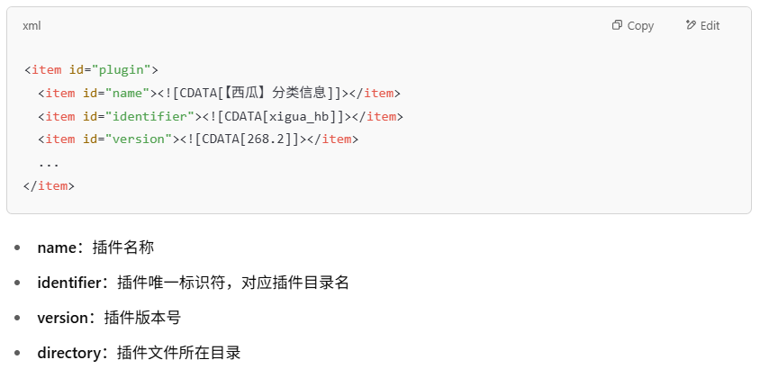
2. 插件模块定义（管理后台中的菜单）
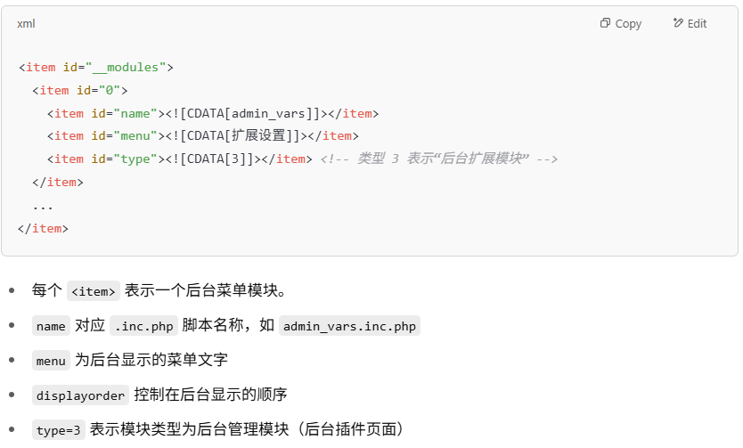
3. 插件变量配置（参数设置）
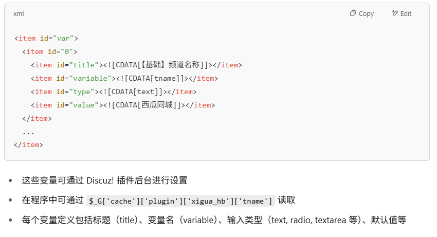
安装时，Discuz! 插件管理系统会读取该 XML 文件并进行如下步骤：
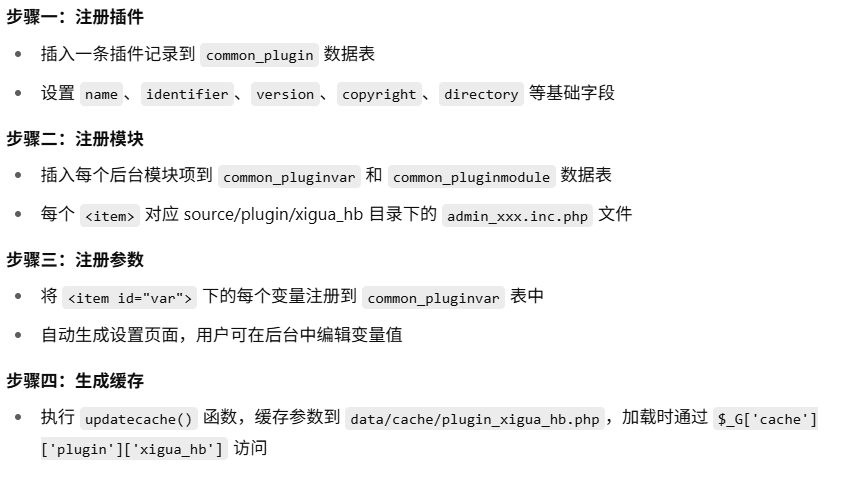
Discuz! 插件设置页面的生成是全自动的，依赖于以下提供的 <item id="var"> 配置段（如你举例的 txsxf），不需要开发者手动编写表单。以下是自动生成机制的详细解析：
<item id="147">
<item id="displayorder"><![CDATA[127]]></item>
<item id="title"><![CDATA[【提现】提现手续费]]></item>
<item id="description"><![CDATA[百分比，如10表示提现收取10%手续费;仅自动提现时候有效]]></item>
<item id="variable"><![CDATA[txsxf]]></item>
<item id="type"><![CDATA[number]]></item>
<item id="value"><![CDATA[0]]></item>
<item id="extra"><![CDATA[]]></item>
</item>
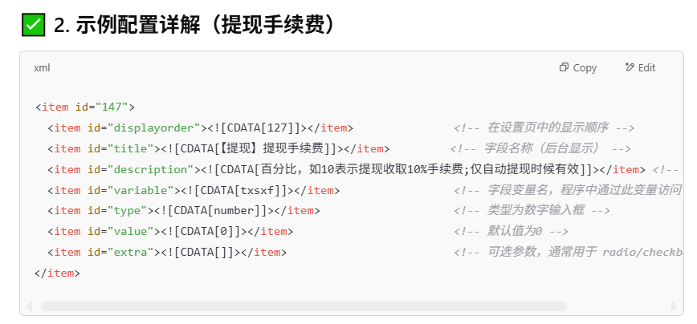
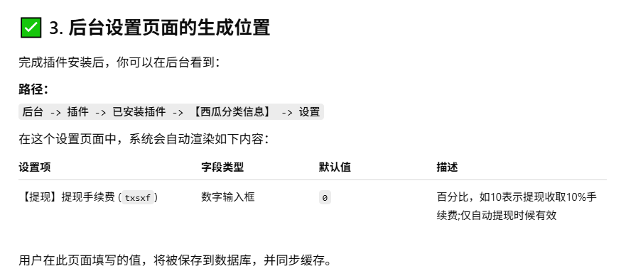
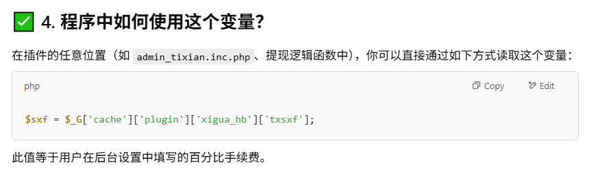
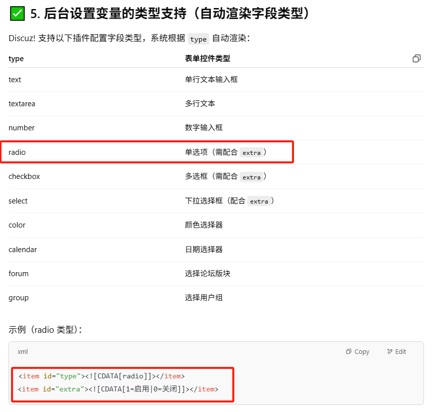
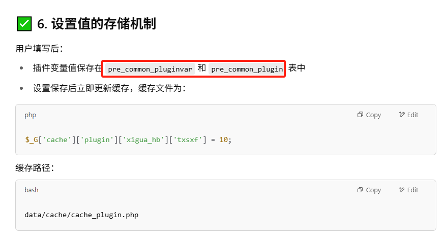
4. 页面嵌入¶
1. 什么是页面嵌入（Hook）机制？¶
Hook（钩子）机制是 Discuz! 给插件开放的注入接口，允许插件在系统运行时「挂钩」到核心页面的某个位置，插入自己的代码或 HTML 内容，而无需改动原始代码和模板。
你可以理解为：页面或模块在运行时，预留了“插槽”，插件可以往这个插槽中注入内容。
2. Hook 的类型有哪些？¶
Discuz! 页面嵌入主要分为两种类型：
| 类型 | 示例 | 插件开发入口 |
|---|---|---|
| 模板 Hook（HTML级） | <!--{hook/index_top}--> |
插件模板嵌入：输出HTML内容 |
| 逻辑 Hook（函数级） | hookscript('forum', 'index', 'func', array(...)) |
插件逻辑代码嵌入：输出处理逻辑或结果数据 |
3. 页面嵌入模块的命名规范¶
官方结构： source/plugin/插件标识符/hook/模块名_页面名.inc.php
| Hook 目标页面 | Hook 文件名 | Hook 点说明 |
|---|---|---|
| 首页 | hook/index_top.inc.php | 首页顶部 |
| 帖子页 | hook/viewthread_bottom.inc.php | 帖子底部 |
| 模板 Hook | hook/xxx.inc.php | 用 echo 输出 HTML 内容 |
| 逻辑 Hook | hook/forum_index_top.func.php | 定义函数 plugin_xxx_xxx::hookname() |
| 输出函数 Hook | hook/forum_index_top_output.func.php | 返回一个 string 内容 |
多个 Hook 文件同时存在时：
.func.php 优先用于逻辑处理
.inc.php 多用于模板插入
_output.func.php 用于 hookscript() 函数调用的 hook 点。
4. 页面嵌入模块的编写方法¶
<?php
if(!defined('IN_DISCUZ')) exit('Access Denied');
include template('myaddon:index_top');
5. 实践建议：如何高效使用页面嵌入¶
| 场景 | 推荐方式 |
|---|---|
| 你想注入内容 | 用 .inc.php 输出 HTML |
| 你想控制行为 | 用 .func.php 定义逻辑 |
| 内容较复杂 | 使用模板 + include template(...) |
| 插件交互多个页面 | 设计多个 Hook 文件，每个页面独立处理 |
| 想让用户控制开关 | 配合插件设置变量控制显示开关 |
5. 安装/升级/卸载¶
1. 安装、卸载脚本¶
插件支持在安装、卸载时自动执行指定的 PHP 脚本，用于创建或清理数据表、插入默认数据等操作。
<root>
<item id="plugin">
...
<item id="installfile"><![CDATA[install.php]]></item>
<item id="uninstallfile"><![CDATA[uninstall.php]]></item>
</item>
</root>
- installfile：插件安装时自动执行的脚本；
- uninstallfile：插件卸载时自动执行的脚本
<?php
if(!defined('IN_DISCUZ')) {
exit('Access Denied');
}
// 创建数据表或插入初始化数据
$sql = <<<EOF
CREATE TABLE IF NOT EXISTS `pre_myplugin_data` (
`id` int(10) unsigned NOT NULL AUTO_INCREMENT,
`uid` int(10) NOT NULL DEFAULT '0',
PRIMARY KEY (`id`)
) ENGINE=InnoDB DEFAULT CHARSET=utf8mb4;
EOF;
runquery($sql);
// 通知系统插件安装/卸载完成
$finish = TRUE;
- 推荐使用 pre_ 表前缀，或统一通过 DB::table() 方式动态生成表名；
- 所有 SQL 执行必须通过 runquery() 函数，支持批量执行；
- 结尾设置 $finish = TRUE; 表示脚本执行成功。
2. 升级脚本¶
插件支持自动升级机制。每次升级操作时可指定 PHP 脚本执行数据库结构变更或数据迁移。
<?php
if(!defined('IN_DISCUZ')) {
exit('Access Denied');
}
if($fromversion == '1.0' && $toversion == '1.1') {
runquery("ALTER TABLE ".DB::table('myplugin_data')." ADD COLUMN newcol INT(11) NOT NULL DEFAULT 0");
}
$finish = TRUE;
- $fromversion / $toversion：Discuz! 会自动注入版本号变量，用于判断升级阶段；
- 可执行任意逻辑，如结构修改、数据迁移、缓存刷新等。
3. 检测脚本（预处理逻辑）¶
插件可设置一个检测脚本，在安装、卸载、升级操作开始前自动调用。适用于环境检测、依赖确认、提示说明等。
<?php
if(!defined('IN_DISCUZ')) {
exit('Access Denied');
}
if(!function_exists('curl_init')) {
echo '插件依赖 curl 扩展，请开启后再安装。';
exit;
}
- 支持输出 HTML/纯文本内容；
- 若需要中止安装流程，直接使用 exit；
- 检测逻辑可覆盖系统版本、数据库结构、PHP 扩展等。
4. 插件版本信息设置¶
插件版本信息应写入 XML 文件，系统会据此识别当前版本及是否需要升级。
- 每次升级插件后，应同步修改此字段内容；
- 升级机制将据此判断版本差异，触发 upgradefile 中脚本执行。
5. 结构建议：插件目录结构规范¶
source/plugin/myplugin/
├── install.php
├── uninstall.php
├── upgrade.php
├── check.php
├── plugin_myplugin.xml
├── discuz_smilies_test.xml
├── discuz_styles_test.xml
└── include/
6. 西瓜分类XML文件案例分析¶
- 插件基础信息
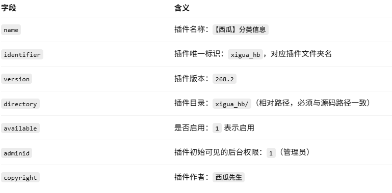
- 插件后台菜单（modules）
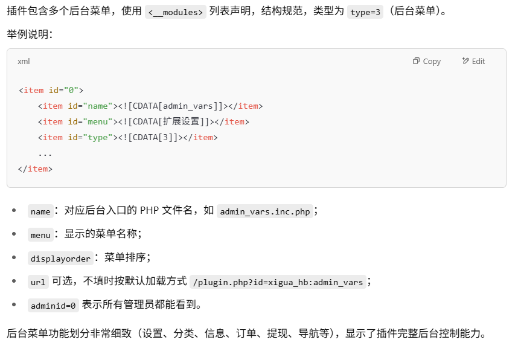
- 插件配置项（变量）
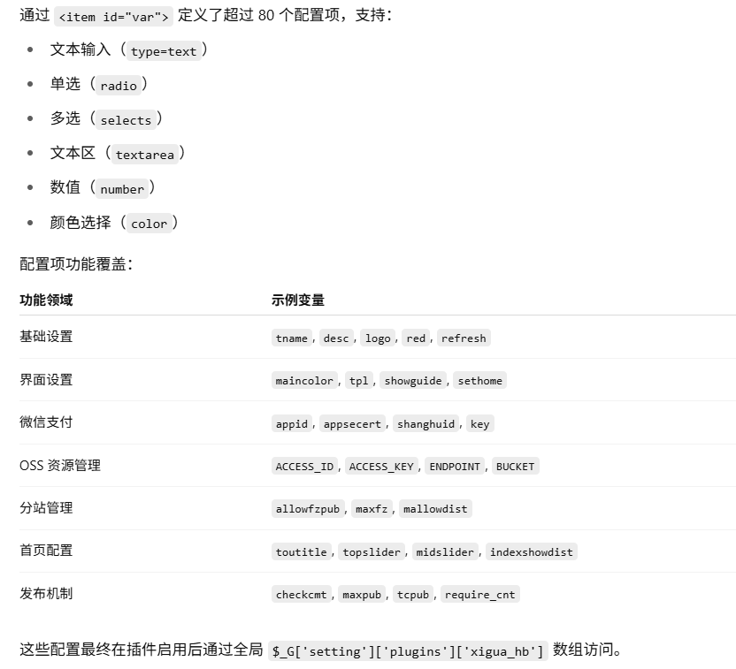
6. 插件语言包机制¶
1. 插件语言包机制（语言国际化 i18n）¶
1. 语言包文件位置
统一放置在：data/plugindata/[插件标识].lang.php
注意：此文件不需要导出发布，仅在开发模式中加载。语言内容会在导出时嵌入到 XML 中。
2. 文件结构
<?php
$scriptlang['xigua_hb'] = array(
'add_success' => '添加成功',
'delete_confirm' => '确定删除吗？',
);
$templatelang['xigua_hb'] = array(
'welcome' => '欢迎使用西瓜插件',
);
$installlang['xigua_hb'] = array(
'install_success' => '插件安装成功！',
);
?>
scriptlang：供 PHP 脚本使用.templatelang：供模板使用；installlang：供 install/upgrade 脚本使用；- 每个数组的键为英文标识符，值为中文/翻译内容；
- 如果某一类未用到，可以省略该数组定义。
3. 语言包调用方式
相当于模板中的翻译标签，自动渲染为 "欢迎使用西瓜插件"。
2. 语言包导出机制¶
导出插件时（即通过后台导出 XML 插件文件），系统会将语言包数组自动提取并写入 XML 节点中，示例结构如下：
<item id="language">
<item id="scriptlang">
<item id="add_success"><![CDATA[添加成功]]></item>
</item>
<item id="templatelang">
<item id="welcome"><![CDATA[欢迎使用西瓜插件]]></item>
</item>
<item id="installlang">
<item id="install_success"><![CDATA[插件安装成功！]]></item>
</item>
</item>
这样即使 plugindata/*.lang.php 不在插件包中，插件依然能正常加载翻译。
7. 注意事项¶
1. 插件文件结构规范¶
插件所有程序文件必须集中放在: source/plugin/[插件标识]/
例如：
source/plugin/xigua_hb/
├── include/
├── template/
├── install.php
├── uninstall.php
├── plugin_xigua_hb.xml
这样可确保插件的部署、导出、权限验证、模板加载、语言包机制都能正常运行。
2. 插件模块的调用方式（前台 & 后台）¶
- 会自动加载：
source/plugin/xigua_hb/index.inc.php（或xigua_hb/include/index.inc.php）- 并初始化 Discuz! 核心环境（class_core）
admin.php?action=plugins&identifier=插件标识&pmod=模块名
admin.php?action=plugins&identifier=xigua_hb&pmod=admin_cat
- 加载路径为：
source/plugin/xigua_hb/admin_cat.inc.php
- 会自动完成：
- 初始化（class_core）
- 权限验证（IN_ADMINCP 检查）
- 后台模板自动加载
- 系统会自动替换 $edit 和 $pmod，便于从后台插件配置中跳转。
3. 关于插件导出与安装流程¶
- 推荐使用“插件导出”功能：
- Discuz! 提供完整的插件导出机制，包括：
- 插件结构定义（plugin.xml）
- 配置项（
- ）
- 后台菜单（
- ）
- 语言包（
- ）
- 安装/卸载脚本（installfile、uninstallfile）
- 可“一键安装”，提升用户体验，避免手动复制错误
- 如果不使用导出，至少应提供完整说明文档：
- 插件创建了哪些表？
- 是否修改了系统模板或字段？
- 卸载是否自动清除数据？
- 是否会影响升级流程？
4. 数据库结构与插件数据存储建议¶
- 使用独立数据表
- 若功能完整独立，应创建独立表，如：
- 建议通过 DB::table() 自动加前缀，如：
- 避免直接修改 common_member、forum_thread 等核心表
- 不应删除系统字段或索引；
- 增加字段需谨慎，避免字段冲突；
- 若有必要新增字段，命名必须添加插件前缀，如 xigua_flag，避免与未来版本冲突。
- 若功能完整独立，应创建独立表，如：
- 如果确实新增字段，应说明并提供卸载还原说明：
卸载时执行：
8. 实例讲解¶
以“马甲插件（myrepeats）”为例，结合源码和设计流程，总结插件开发的核心路径、组织结构和典型模块的编写方式。
1. 插件开发流程¶
[开启开发模式]
↓
[后台插件设计：添加标识+目录]
↓
[创建目录结构 + 配置语言包 + 变量定义]
↓
[前台模块]
├─ 嵌入导航：myrepeats.class.php
├─ 设置功能：memcp.inc.php + memcp.htm
└─ 异步弹层：switch.inc.php
↓
[后台模块]
└─ 管理中心：admincp.inc.php
↓
[数据模型]
└─ table_myrepeats.php
↓
[数据库初始化]
└─ install.php / uninstall.php
↓
[导出插件 XML + 打包发布]
2. 启用开发者模式 + 插件初始化（后台设计模式）¶
$_config['plugindeveloper'] = 1;
#此操作会：
#启用后台“插件设计”功能
#允许添加模块、变量、菜单项等
#激活语言包管理功能
插件初始化（后台设计模式）: 【后台】→ 应用 → 插件 → 设计 → 添加新插件。
3. 创建目录结构 + 配置语言包 + 变量定义¶
添加完基本信息后, 在插件文件夹目录 source/plugin/ 下新建对应的文件夹(这里我们新建 myrepeats/ 文件夹)。 如果插件开发过程中需要语言包, 则后台开启设置后在 data/plugindata/ 下添加语言包文件, myrepeats.lang.php （myrepeats为插件初始化中添加的唯一标识符）来存储我们插件开发过程中用到的语言。
source/plugin/myrepeats/
├── install.php # 安装脚本（执行建表）
├── uninstall.php # 卸载脚本（删除表）
├── memcp.inc.php # 前台设置逻辑
├── switch.inc.php # AJAX 显示马甲列表
├── admincp.inc.php # 后台管理功能
├── myrepeats.class.php # 嵌入类：插入用户导航入口
├── template/
│ └── memcp.htm # 设置页面模板
├── table/
│ └── table_myrepeats.php # 数据表访问模型
├── plugin_myrepeats.xml # 导出 XML 配置文件（发布包中）
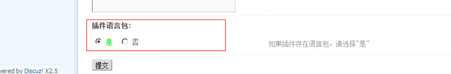
<?php
/*
|--------------------------------------------------------------------------
| 插件语言包文件：data/plugindata/myrepeats.lang.php
|--------------------------------------------------------------------------
| 本文件包含三个语言包数组：
| - $scriptlang 用于插件的 PHP 脚本文件；
| - $templatelang 用于插件的模板 (.htm) 文件；
| - $installlang 用于插件的安装、升级、卸载脚本；
|
| 含有变量值的语言包一般用在脚本文件中调用，其中变量可以通过 showmessage()、
| lang() 等函数的参数，以数组键值对的形式进行替换。
|
| 所有数组的键名为语言标识符（英文 + 下划线），值为实际输出内容。
*/
/*
|--------------------------------------------------------------------------
| $scriptlang：插件脚本文件（PHP）使用的语言项
| 调用方式：
| lang('plugin/myrepeats', 'login_strike')
| showmessage('myrepeats:adduser_succeed', '跳转链接', array('usernamenew' => '张三'));
|--------------------------------------------------------------------------
*/
$scriptlang['myrepeats'] = array(
// 用户切换马甲失败提示：密码错误次数过多
'login_strike' => "密码错误次数过多，请重新设置马甲账号信息并在 15 分钟后再尝试切换。",
/*
* 成功添加马甲账号的提示语，包含变量 {usernamenew}
* 调用时通过数组传参进行替换，例如：
* showmessage('myrepeats:adduser_succeed', '', array('usernamenew' => '张三'));
* 输出结果为：马甲账号 张三 已成功添加。
*/
'adduser_succeed' => "马甲账号 {usernamenew} 已成功添加。",
);
/*
|--------------------------------------------------------------------------
| $templatelang：插件模板文件（.htm）中使用的语言项
| 调用方式：
| {lang myrepeats:myrepeats}
| {lang myrepeats:adduser}
|
| 注意：模板语言项 **不支持变量替换**
|--------------------------------------------------------------------------
*/
$templatelang['myrepeats'] = array(
// 模板中显示“我的马甲”标题或菜单项
'myrepeats' => "我的马甲",
// 模板中“添加马甲账号”按钮或表单标题
'adduser' => "添加马甲账号",
);
/*
|--------------------------------------------------------------------------
| $installlang：插件安装/升级/卸载脚本中使用的语言项
| 使用场景：
| install.php / uninstall.php / upgrade.php 中：
| echo $installlang['install_success'];
|--------------------------------------------------------------------------
*/
$installlang['myrepeats'] = array(
// 示例：'install_success' => '插件安装成功',
);
?>
4. 前台模块¶
- 在前台界面头部增加了马甲入口——程序脚本 页面嵌入
设置一个包含页面嵌入脚本的模块，模块文件名指派为 source/plugin/插件目录/插件模块名.class.php”。(通过嵌入点来实现头部用户信息中, 快捷切换马甲的效果。)
- 它的连接地址指向前台个人设置页面。程序由 home.php 进入, 然后进入默认的个人设置流程里面——扩展项目 个人面板
可在个人面板上部增加一个菜单项。(实现个人设置面板部分)
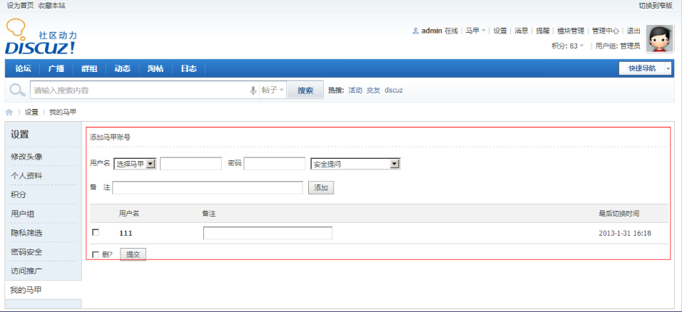
- 后台插件模块模块配置
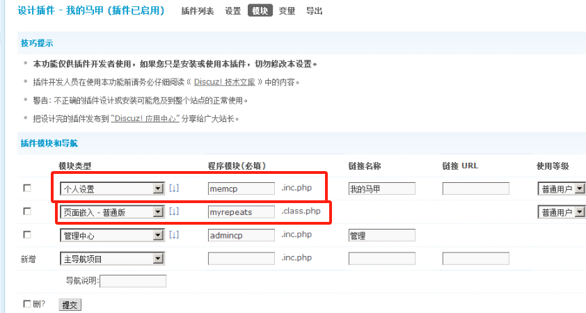
- 后台变量配置
添加插件中需要用到的变量。（马甲插件只需要一个用户组是否开启的状态。）
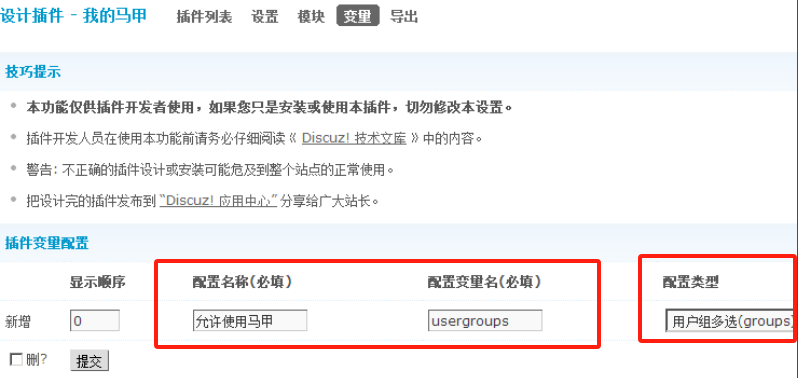
<?php
/*
|--------------------------------------------------------------------------
| 插件嵌入模块：myrepeats.class.php
|--------------------------------------------------------------------------
| 位置：source/plugin/myrepeats/myrepeats.class.php
| 功能：向用户导航条中添加马甲切换入口
| 类名规则：plugin_[插件标识]
| 嵌入点方法：命名必须与指定的系统嵌入点名称一致
| 调用方式：Discuz! 自动加载 plugin.php?id=myrepeats:xxx 时初始化本类
*/
/*
|--------------------------------------------------------------------------
| 安全验证（强制要求）
| 防止此文件被独立 URL 调用，避免绕过 Discuz! 初始化流程
|--------------------------------------------------------------------------
*/
if (!defined('IN_DISCUZ')) {
exit('Access Denied');
}
/*
|--------------------------------------------------------------------------
| 插件嵌入点类，类名必须为 plugin_插件标识
| 若要使用类嵌入方式（如头部插入内容、页面替换等），此类必须存在
|--------------------------------------------------------------------------
*/
class plugin_myrepeats {
// 存储需要返回嵌入点内容的数组（键为嵌入点函数名，值为输出内容）
var $value = array();
/*
|--------------------------------------------------------------------------
| 构造函数（初始化插件逻辑）
| 在类加载时执行，用于初始化变量、判断权限等
|--------------------------------------------------------------------------
*/
function plugin_myrepeats() {
global $_G; // $_G 是 Discuz! 的全局变量容器（包含用户状态、缓存等）
// 如果用户未登录，则不显示马甲入口
if (!$_G['uid']) {
return;
}
/*
|--------------------------------------------------------------------------
| 获取插件变量：允许切换马甲的用户组
| 从 $_G['cache']['plugin'][插件标识] 中读取，后台配置存储在这里
|--------------------------------------------------------------------------
*/
$myrepeatsusergroups = (array)dunserialize($_G['cache']['plugin']['myrepeats']['usergroups']);
// 去除无效值（如空字符串）防止错误匹配
if (in_array('', $myrepeatsusergroups)) {
$myrepeatsusergroups = array();
}
$userlist = array(); // 预留：后续可用于构建马甲账号列表
/*
|--------------------------------------------------------------------------
| 判断当前用户是否拥有马甲功能权限
| 条件：当前用户组在允许组中 或 用户确实有绑定的马甲记录
|--------------------------------------------------------------------------
*/
if (!in_array($_G['groupid'], $myrepeatsusergroups)) {
// 如果 cookie 中没有缓存马甲数量，则从数据库查询并缓存
if (!isset($_G['cookie']['myrepeat_rr'])) {
// 查询当前用户是否有绑定的马甲账号
// C::t('#插件标识#表名')->方法名() 是 Discuz 的插件式数据库访问写法
$users = count(C::t('#myrepeats#myrepeats')->fetch_all_by_username($_G['username']));
// 设置 cookie 缓存马甲数量，避免频繁查询
dsetcookie('myrepeat_rr', 'R'.$users, 86400); // 缓存 1 天
} else {
// 从 cookie 读取马甲数量
$users = substr($_G['cookie']['myrepeat_rr'], 1);
}
// 没有马甲账号，不显示切换入口
if (!$users) {
return '';
}
}
/*
|--------------------------------------------------------------------------
| 输出内容绑定到全局嵌入点 global_usernav_extra1
| 插入的是：导航条上的 “马甲切换” 链接 + 弹出层触发逻辑
|--------------------------------------------------------------------------
*/
$this->value['global_usernav_extra1'] =
// 注入 JS 脚本用于 AJAX 拉取马甲列表
'<script>'.
'function showmyrepeats() {'.
'if(!$(\'myrepeats_menu\')) {'.
'menu=document.createElement(\'div\');'.
'menu.id=\'myrepeats_menu\';'.
'menu.style.display=\'none\';'.
'menu.className=\'p_pop\';'.
'$(\'append_parent\').appendChild(menu);'.
'ajaxget(\'plugin.php?id=myrepeats:switch&list=yes\',\'myrepeats_menu\',\'ajaxwaitid\');'.
'}'.
'showMenu({\'ctrlid\':\'myrepeats\',\'duration\':2});'.
'}'.
'</script>'.
// 输出 HTML 链接入口，绑定到页面导航栏
'<span class="pipe">|</span>'.
'<a id="myrepeats" href="home.php?mod=spacecp&ac=plugin&id=myrepeats:memcp"'.
' class="showmenu cur1" onmouseover="delayShow(this, showmyrepeats)">'.
// 插件语言包调用：显示“切换马甲”
lang('plugin/myrepeats', 'switch').
'</a>'."\n";
}
/*
|--------------------------------------------------------------------------
| 嵌入点输出函数：global_usernav_extra1
| 对应 Discuz 全局嵌入点【用户导航条额外区域】
| 此函数必须返回内容字符串，系统自动插入该区域
|--------------------------------------------------------------------------
*/
function global_usernav_extra1() {
return $this->value['global_usernav_extra1'];
}
}
?>
<?php
/*
|--------------------------------------------------------------------------
| myrepeats 插件前台设置页面处理脚本
| 文件位置：source/plugin/myrepeats/memcp.inc.php
| 通过 plugin.php?id=myrepeats:memcp 调用
| 负责添加/删除马甲账号、输出列表、处理表单提交
|--------------------------------------------------------------------------
*/
if(!defined('IN_DISCUZ')) {
exit('Access Denied');
}
global $_G;
// 获取插件变量配置
$myrepeats_usergroups = dunserialize($_G['cache']['plugin']['myrepeats']['usergroups']);
// 判断当前用户是否属于允许设置马甲的用户组
if(!in_array($_G['groupid'], $myrepeats_usergroups)) {
showmessage('你所在的用户组无权使用马甲功能');
}
// 实例化数据操作类（对应 table_myrepeats.php）
$table = C::t('#myrepeats#myrepeats');
$op = $_GET['op'] ?? '';
$uid = $_G['uid'];
$username = $_G['username'];
if($_SERVER['REQUEST_METHOD'] == 'POST' && $_GET['formhash'] == FORMHASH) {
/*
|--------------------------------------------------------------------------
| 添加马甲账号表单处理
|--------------------------------------------------------------------------
*/
if(isset($_POST['addsubmit'])) {
$usernamenew = dhtmlspecialchars(trim($_POST['usernamenew']));
$passwordnew = trim($_POST['passwordnew']);
$secquesnew = trim($_POST['secquesnew']);
// 检查用户是否存在并验证密码
$login = logincheck($usernamenew, $passwordnew, $secquesnew);
if(!$login) {
showmessage('用户名或密码错误');
}
// 插入马甲记录
$table->insert_repeat($uid, $usernamenew);
// 设置缓存，防止重复查询
dsetcookie('myrepeat_rr', '', -1); // 清除旧缓存
showmessage('myrepeats:adduser_succeed', 'plugin.php?id=myrepeats:memcp', array(
'usernamenew' => $usernamenew
));
}
/*
|--------------------------------------------------------------------------
| 删除马甲账号处理
|--------------------------------------------------------------------------
*/
if(isset($_POST['deletesubmit']) && is_array($_POST['delete'])) {
foreach($_POST['delete'] as $uname) {
$table->delete_by_uid_username($uid, $uname);
}
showmessage('操作成功', 'plugin.php?id=myrepeats:memcp');
}
}
// 获取当前用户所有的马甲账号（用于显示列表）
$repeats = $table->fetch_all_by_uid($uid);
// 语言包变量加载（模板中使用）
include template('myrepeats:memcp');
5. 后台模块¶
这个文件主要功能是对后台插件数据进行处理。开发者可以根据自己的需求, 设计此文件的代码结构。插件开发时需要注意, 后台提供了很多Discuz! 内置的函数来显示界面, 例如: showtableheader(), showformheader(), showsubmit() 等函数, 方便开发使用。
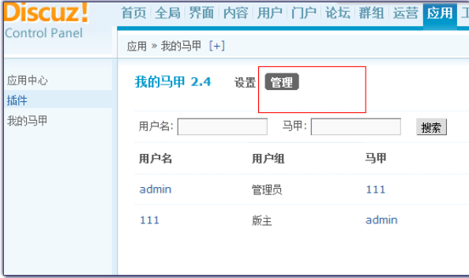
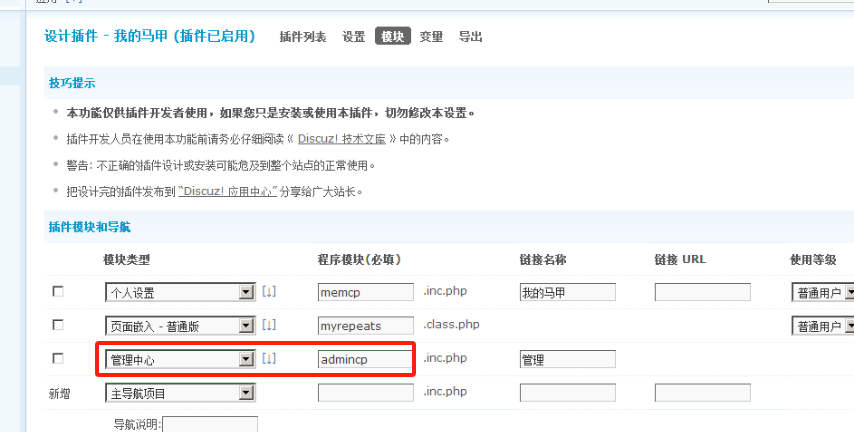
<?php
/*
|--------------------------------------------------------------------------
| 插件后台管理主文件（后台模块）
| 路径：source/plugin/myrepeats/admincp.inc.php
| 访问路径：admin.php?action=plugins&identifier=myrepeats&pmod=admincp
| 功能：支持马甲账号的管理（查找、锁定、删除）
|--------------------------------------------------------------------------
*/
if (!defined('IN_DISCUZ') || !defined('IN_ADMINCP')) {
exit('Access Denied'); // 安全验证：后台模块必须受后台验证控制
}
/*
|--------------------------------------------------------------------------
| 语言包引用：后台使用 $scriptlang['插件标识']，并赋值为 $Plang 以简化后续调用
|--------------------------------------------------------------------------
*/
$Plang = $scriptlang['myrepeats'];
/*
|--------------------------------------------------------------------------
| AJAX 操作处理：锁定/解锁、删除马甲账号
|--------------------------------------------------------------------------
*/
if ($_GET['op'] == 'lock') {
// 读取该用户与马甲账号对应的记录
$myrepeat = C::t('#myrepeats#myrepeats')->fetch_all_by_uid_username($_GET['uid'], $_GET['username']);
// 切换锁定状态
$lock = $myrepeat['lock'];
$locknew = $lock ? 0 : 1;
// 更新状态
C::t('#myrepeats#myrepeats')->update_locked_by_uid_username($_GET['uid'], $_GET['username'], $locknew);
// AJAX 返回结构
ajaxshowheader();
echo $lock ? $Plang['normal'] : $Plang['lock']; // 返回状态文字
ajaxshowfooter();
} elseif ($_GET['op'] == 'delete') {
// 删除马甲账号
C::t('#myrepeats#myrepeats')->delete_by_uid_usernames($_GET['uid'], $_GET['username']);
ajaxshowheader();
echo $Plang['deleted'];
ajaxshowfooter();
}
/*
|--------------------------------------------------------------------------
| 搜索条件初始化
|--------------------------------------------------------------------------
*/
$ppp = 100; // 每页显示条数
$resultempty = FALSE; // 查询为空标志
$srchadd = ''; // 查询 SQL 条件追加
$searchtext = ''; // 提示文字
$extra = ''; // URL 附加参数
$srchuid = ''; // 被搜索的 UID
$page = max(1, intval($_GET['page']));
/*
|--------------------------------------------------------------------------
| 搜索条件处理（根据 uid、用户名、马甲名搜索）
|--------------------------------------------------------------------------
*/
if (!empty($_GET['srchuid'])) {
$srchuid = intval($_GET['srchuid']);
$srchadd = "AND uid='$srchuid'";
} elseif (!empty($_GET['srchusername'])) {
$srchuid = C::t('common_member')->fetch_uid_by_username($_GET['srchusername']);
if ($srchuid) {
$srchadd = "AND uid='$srchuid'";
} else {
$resultempty = TRUE; // 用户名不存在
}
} elseif (!empty($_GET['srchrepeat'])) {
$extra = '&srchrepeat=' . rawurlencode($_GET['srchrepeat']);
$srchadd = "AND username='" . addslashes($_GET['srchrepeat']) . "'";
$searchtext = $Plang['search'] . ' "' . $_GET['srchrepeat'] . '" ' . $Plang['repeats'] . ' ';
}
/*
|--------------------------------------------------------------------------
| 状态筛选（锁定 / 正常）
|--------------------------------------------------------------------------
*/
if ($srchuid) {
$extra = '&srchuid=' . $srchuid;
$member = getuserbyuid($srchuid);
$searchtext = $Plang['search'] . ' "' . $member['username'] . '" ' . $Plang['repeatusers'] . ' ';
}
$statary = array(
-1 => $Plang['status'],
0 => $Plang['normal'],
1 => $Plang['lock']
);
$status = isset($_GET['status']) ? intval($_GET['status']) : -1;
if ($status >= 0) {
$srchadd .= " AND locked='$status'";
$searchtext .= $Plang['search'] . $statary[$status] . $Plang['statuss'];
}
if ($searchtext) {
$searchtext = '<a href="' . ADMINSCRIPT . '?action=plugins&operation=config&do=' . $pluginid . '&identifier=myrepeats&pmod=admincp">' . $Plang['viewall'] . '</a> ' . $searchtext;
}
/*
|--------------------------------------------------------------------------
| 加载用户组缓存，用于显示用户组名
|--------------------------------------------------------------------------
*/
loadcache('usergroups');
/*
|--------------------------------------------------------------------------
| 表单 & 表格渲染（使用 Discuz 后台函数）
|--------------------------------------------------------------------------
*/
showtableheader(); // 输出表格开始
// 表单开始，ID 为 repeatsubmit，目标 URL 为当前后台插件页
showformheader('plugins&operation=config&do=' . $pluginid . '&identifier=myrepeats&pmod=admincp', 'repeatsubmit');
// 搜索输入框 + 按钮
showsubmit('repeatsubmit', $Plang['search'],
$lang['username'] . ': <input name="srchusername" value="' . htmlspecialchars($_GET['srchusername']) . '" class="txt" /> ' .
$Plang['repeat'] . ': <input name="srchrepeat" value="' . htmlspecialchars($_GET['srchrepeat']) . '" class="txt" />',
$searchtext
);
showformfooter();
/*
|--------------------------------------------------------------------------
| 状态筛选下拉框（normal / lock）
|--------------------------------------------------------------------------
*/
$statselect = '<select onchange="location.href=\'' . ADMINSCRIPT . '?action=plugins&operation=config&do=' . $pluginid . '&identifier=myrepeats&pmod=admincp' . $extra . '&status=\' + this.value">';
foreach ($statary as $k => $v) {
$statselect .= '<option value="' . $k . '"' . ($k == $status ? ' selected' : '') . '>' . $v . '</option>';
}
$statselect .= '</select>';
/*
|--------------------------------------------------------------------------
| 表头：用户名、用户组、马甲、最后切换时间、状态操作、删除操作
|--------------------------------------------------------------------------
*/
echo '<tr class="header">
<th>' . $Plang['username'] . '</th>
<th>' . $lang['usergroup'] . '</th>
<th>' . $Plang['repeat'] . '</th>
<th>' . $Plang['lastswitch'] . '</th>
<th>' . $statselect . '</th>
<th></th>
</tr>';
/*
|--------------------------------------------------------------------------
| 数据列表渲染（分页 + 筛选）
|--------------------------------------------------------------------------
*/
if (!$resultempty) {
$count = C::t('#myrepeats#myrepeats')->count_by_search($srchadd);
$myrepeats = C::t('#myrepeats#myrepeats')->fetch_all_by_search($srchadd, ($page - 1) * $ppp, $ppp);
$uids = array();
foreach ($myrepeats as $myrepeat) {
$uids[] = $myrepeat['uid'];
}
$users = C::t('common_member')->fetch_all($uids);
$i = 0;
foreach ($myrepeats as $myrepeat) {
$myrepeat['lastswitch'] = $myrepeat['lastswitch'] ? dgmdate($myrepeat['lastswitch']) : '';
$myrepeat['usernameenc'] = rawurlencode($myrepeat['username']);
$opstr = !$myrepeat['locked'] ? $Plang['normal'] : $Plang['lock'];
// 输出一行
$i++;
echo '<tr>
<td><a href="' . ADMINSCRIPT . '?action=plugins&operation=config&do=' . $pluginid . '&identifier=myrepeats&pmod=admincp&srchuid=' . $myrepeat['uid'] . '">' . $users[$myrepeat['uid']]['username'] . '</a></td>
<td>' . $_G['cache']['usergroups'][$users[$myrepeat['uid']]['groupid']]['grouptitle'] . '</td>
<td><a href="' . ADMINSCRIPT . '?action=plugins&operation=config&do=' . $pluginid . '&identifier=myrepeats&pmod=admincp&srchrepeat=' . rawurlencode($myrepeat['username']) . '" title="' . htmlspecialchars($myrepeat['comment']) . '">' . $myrepeat['username'] . '</a></td>
<td>' . $myrepeat['lastswitch'] . '</td>
<td><a id="d' . $i . '" onclick="ajaxget(this.href, this.id, \'\');return false" href="' . ADMINSCRIPT . '?action=plugins&operation=config&do=' . $pluginid . '&identifier=myrepeats&pmod=admincp&uid=' . $myrepeat['uid'] . '&username=' . $myrepeat['usernameenc'] . '&op=lock">' . $opstr . '</a></td>
<td><a id="p' . $i . '" onclick="ajaxget(this.href, this.id, \'\');return false" href="' . ADMINSCRIPT . '?action=plugins&operation=config&do=' . $pluginid . '&identifier=myrepeats&pmod=admincp&uid=' . $myrepeat['uid'] . '&username=' . $myrepeat['usernameenc'] . '&op=delete">[' . $lang['delete'] . ']</a></td>
</tr>';
}
}
showtablefooter();
/*
|--------------------------------------------------------------------------
| 分页处理：multi() 函数生成页码跳转链接
|--------------------------------------------------------------------------
*/
echo multi($count, $ppp, $page, ADMINSCRIPT . "?action=plugins&operation=config&do=$pluginid&identifier=myrepeats&pmod=admincp$extra");
?>
6. 数据模型¶
- 插件功能
用户可以绑定多个马甲账号
可为每个马甲记录备注、锁定状态；
记录最后一次使用时间；
后台可管理、筛选、删除这些记录。 - 数据实体建模：每一条“马甲绑定”应包括以下字段
| 字段名 | 类型 | 含义 |
| :--------- | :--------------- | :------------------------- |
| id | int(10) unsigned | 主键，自增 |
| uid | int(10) unsigned | 用户的主 UID |
| username | varchar(50) | 被绑定的马甲账号名 |
| comment | varchar(255) | 备注说明，可空 |
| locked | tinyint(1) | 是否锁定（0 正常，1 锁定） |
| lastswitch | int(10) unsigned | 最近一次使用该马甲的时间戳 |
| dateline | int(10) unsigned | 添加时间戳 |
| | | | - 推荐建表 SQL 语句（用于 install.php）
sql
CREATE TABLE IF NOT EXISTS `pre_myrepeats` (
`id` INT(10) UNSIGNED NOT NULL AUTO_INCREMENT,
`uid` INT(10) UNSIGNED NOT NULL DEFAULT '0',
`username` VARCHAR(50) NOT NULL DEFAULT '',
`comment` VARCHAR(255) DEFAULT '',
`locked` TINYINT(1) NOT NULL DEFAULT '0',
`lastswitch` INT(10) UNSIGNED NOT NULL DEFAULT '0',
`dateline` INT(10) UNSIGNED NOT NULL DEFAULT '0',
PRIMARY KEY (`id`),
KEY `uid` (`uid`),
KEY `username` (`username`),
KEY `locked` (`locked`)
) ENGINE=InnoDB DEFAULT CHARSET=utf8mb4;
表名应为：pre_myrepeats，其中 pre_ 是全局前缀，可用 DB::table() 自动适配。
4. 数据访问模型
source/plugin/myrepeats/table/table_myrepeats.php
Discuz! 使用封装类访问数据，推荐命名为：table_myrepeats，继承自 discuz_table。
<?php
/*
|--------------------------------------------------------------------------
| 插件数据模型类：table_myrepeats.php
| 路径：source/plugin/myrepeats/table/table_myrepeats.php
| 用法：C::t('#myrepeats#myrepeats')->方法名(...)
|--------------------------------------------------------------------------
*/
if (!defined('IN_DISCUZ')) {
exit('Access Denied');
}
class table_myrepeats extends discuz_table {
public function __construct() {
$this->_table = 'myrepeats'; // 表名不包含前缀
$this->_pk = 'id'; // 主键字段
parent::__construct();
}
// 通过主 UID 获取所有马甲账号
public function fetch_all_by_uid($uid) {
return DB::fetch_all("SELECT * FROM %t WHERE uid=%d ORDER BY dateline DESC", array($this->_table, $uid));
}
// 通过 UID + username 获取单个马甲（用于验证、锁定操作）
public function fetch_all_by_uid_username($uid, $username) {
return DB::fetch_first("SELECT * FROM %t WHERE uid=%d AND username=%s", array($this->_table, $uid, $username));
}
// 查询当前用户名是否作为马甲存在（用于插件入口判断）
public function fetch_all_by_username($username) {
return DB::fetch_all("SELECT * FROM %t WHERE username=%s", array($this->_table, $username));
}
// 插入马甲账号记录
public function insert_repeat($uid, $username, $comment = '') {
return DB::insert($this->_table, array(
'uid' => $uid,
'username' => $username,
'comment' => $comment,
'dateline' => TIMESTAMP
));
}
// 删除马甲绑定记录
public function delete_by_uid_username($uid, $username) {
return DB::delete($this->_table, DB::field('uid', $uid) . ' AND ' . DB::field('username', $username));
}
// 锁定 / 解锁马甲账号
public function update_locked_by_uid_username($uid, $username, $locked) {
return DB::update($this->_table, array('locked' => $locked), DB::field('uid', $uid) . ' AND ' . DB::field('username', $username));
}
// 查询总数，用于后台分页
public function count_by_search($condition) {
return DB::result_first("SELECT COUNT(*) FROM %t WHERE 1 %i", array($this->_table, DB::raw($condition)));
}
// 查询列表，用于后台搜索显示
public function fetch_all_by_search($condition, $start = 0, $limit = 50) {
return DB::fetch_all("SELECT * FROM %t WHERE 1 %i ORDER BY dateline DESC LIMIT %d, %d", array($this->_table, DB::raw($condition), $start, $limit));
}
}
?>
- 配套卸载脚本（uninstall.php）
如果用户卸载插件，建议清理创建的表：
<?php
if (!defined('IN_DISCUZ')) {
exit('Access Denied');
}
runquery("DROP TABLE IF EXISTS `".DB::table('myrepeats')."`;");
$finish = TRUE;
?>
7. 插件导出与发布¶
- 插件导出（生成 XML 配置文件）
插件在后台设计模式完成后，可以通过以下路径导出：
点击“导出”后，会生成插件 XML 文件，默认名称如：plugin_myrepeats.xml
2. 导出 XML 内容包含内容如下：
<root>
<item id="plugin">
<item id="name"><![CDATA[我的马甲]]></item>
<item id="identifier"><![CDATA[myrepeats]]></item>
<item id="version"><![CDATA[1.0]]></item>
<item id="description"><![CDATA[支持一人多号切换使用]]></item>
<item id="directory"><![CDATA[myrepeats/]]></item>
<!-- 安装/卸载脚本声明 -->
<item id="installfile"><![CDATA[install.php]]></item>
<item id="uninstallfile"><![CDATA[uninstall.php]]></item>
<!-- 插件变量、后台模块、语言包等也会包含 -->
</item>
</root>
3. 插件安装脚本：install.php（初始化数据库、缓存等）:
source/plugin/myrepeats/install.php。
<?php
/*
|--------------------------------------------------------------------------
| 插件安装脚本：install.php
| 功能：创建数据表、初始化插件数据、设定默认值等
| 执行时机：用户安装插件时自动执行
|--------------------------------------------------------------------------
*/
if (!defined('IN_DISCUZ')) {
exit('Access Denied');
}
// 建表 SQL
$sql = <<<EOF
CREATE TABLE IF NOT EXISTS `pre_myrepeats` (
`id` INT(10) UNSIGNED NOT NULL AUTO_INCREMENT,
`uid` INT(10) UNSIGNED NOT NULL,
`username` VARCHAR(50) NOT NULL,
`comment` VARCHAR(255) DEFAULT '',
`locked` TINYINT(1) NOT NULL DEFAULT 0,
`lastswitch` INT(10) UNSIGNED NOT NULL DEFAULT 0,
`dateline` INT(10) UNSIGNED NOT NULL DEFAULT 0,
PRIMARY KEY (`id`),
KEY `uid` (`uid`),
KEY `username` (`username`)
) ENGINE=InnoDB DEFAULT CHARSET=utf8mb4;
EOF;
// runquery() 是 Discuz 内置函数，自动解析多条 SQL
runquery($sql);
// 必须设置 $finish = TRUE 告知系统安装完成
$finish = TRUE;
?>
- 插件卸载脚本：uninstall.php（清理数据）:
source/plugin/myrepeats/uninstall.php
<?php
/*
|--------------------------------------------------------------------------
| 插件卸载脚本：uninstall.php
| 功能：删除数据表、清理插件变量、重置缓存等
|--------------------------------------------------------------------------
*/
if (!defined('IN_DISCUZ')) {
exit('Access Denied');
}
// 删除插件创建的数据表
runquery("DROP TABLE IF EXISTS `".DB::table('myrepeats')."`;");
// 如果插件使用了设置项，可考虑清理 config 表项（可选）
$finish = TRUE;
?>